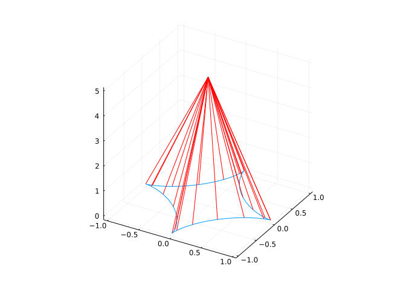
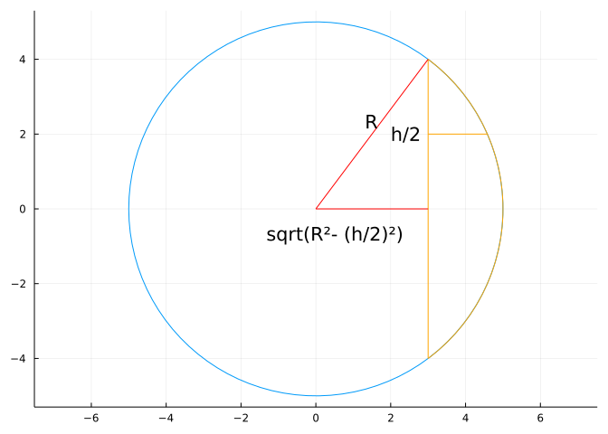
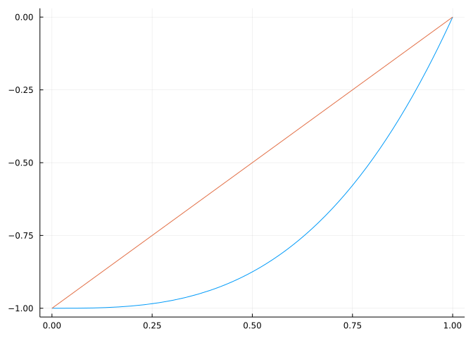

d0, d1, h = 2.5, 3.75, 4.75
rad(x) = d0/2 + (d1/2 - d0/2)/h * x
vol, _ = quadgk(x -> pi * rad(x)^2, 0, h)(36.917804295114436, 7.105427357601002e-15)This section uses these add-on packages:
using CalculusWithJulia
using Plots
using QuadGK
using Unitful, UnitfulUS
using Roots
using SymPy
An ad for a summer job says work as the Michelin Man! Sounds promising, but how much will that costume weigh? A very hot summer may make walking around in a heavy costume quite uncomfortable.
A back-of-the envelope calculation would start by
Then the volume would be found by adding:
\[ V = \pi \cdot r_1^2 \cdot h_1 + \pi \cdot r_2^2 \cdot h_2 + \cdot + \pi \cdot r_n^2 \cdot h_n. \]
The weight would come by multiplying the volume by some appropriate density.
Looking at the sum though, we see the makings of an approximate integral. If the heights were to get infinitely small, we might expect this to approach something like \(V=\int_a^b \pi r(h)^2 dh\).
In fact, we have in general:
Volume of a figure with a known cross section: The volume of a solid with known cross-sectional area \(A_{xc}(x)\) from \(x=a\) to \(x=b\) is given by
\(V = \int_a^b A_{xc}(x) dx.\)
This assumes \(A_{xc}(x)\) is integrable.
This formula is derived by approximating the volume by “slabs” with volume \(A_{xc}(x) \Delta x\) and using the Riemann integral’s definition to pass to the limit. The discs of the Michelin man are an example, where the cross-sectional area is just that of a circle, or \(\pi r^2\).
We begin with some examples of a special class of solids - solids of revolution. These have an axis of symmetry from which the slabs are then just circular disks.
Consider the volume contained in this glass, it will depend on the radius at different values of \(x\):

If \(r(x)\) is the radius as a function of \(x\), then the cross sectional area is \(\pi r(x)^2\) so the volume is given by:
\[ V = \int_a^b \pi r(x)^2 dx. \]
The formula is for a rotation around the \(x\)-axis, but can easily be generalized to rotating around any line (say the \(y\)-axis or \(y=x\), …) just by adjusting what \(r(x)\) is taken to be.
For a numeric example, we consider the original Red Solo Cup. The dimensions of the cup were basically: a top diameter of \(d_1 = 3~ \frac{3}{4}\) inches, a bottom diameter of \(d_0 = 2~ \frac{1}{2}\) inches and a height of \(h = 4~ \frac{3}{4}\) inches.
The central axis is straight down. If we rotate the cup so this is the \(x\)-axis, then we can get
\[ r(x) = \frac{d_0}{2} + \frac{d_1/2 - d_0/2}{h}x = \frac{5}{4} + \frac{5}{38}x \]
The volume in cubic inches will be:
\[ V = \int_0^h \pi r(x)^2 dx \]
This is
d0, d1, h = 2.5, 3.75, 4.75
rad(x) = d0/2 + (d1/2 - d0/2)/h * x
vol, _ = quadgk(x -> pi * rad(x)^2, 0, h)(36.917804295114436, 7.105427357601002e-15)So \(36.9 \text{in}^3\). How many ounces is that? It is useful to know that 1 gallon of water is defined as \(231\) cubic inches, contains \(128\) ounces, and weighs \(8.34\) pounds.
So our cup holds this many ounces:
ozs = vol / 231 * 12820.456618830193282Full it is about \(20\) ounces, though this doesn’t really account for the volume taken up by the bottom of the cup, etc.
If you are poor with units, Julia can provide some help through the Unitful package. Here the additional UnitfulUS package must also be included, as was done above, to access fluid ounces:
vol * u"inch"^3 |> us"floz"20.456618830193282 fl ozᵘˢBefore Solo “squared” the cup, the Solo cup had markings that - some thought - indicated certain volume amounts.

What is the height for \(5\) ounces (for a glass of wine)? \(12\) ounces (for a beer unit)?
Here the volume is fixed, but the height is not. For \(v\) ounces, we need to convert to cubic inches. The conversion is \(1\) ounce is \(231/128 \text{in}^3\).
So we need to solve \(v \cdot (231/128) = \int_0^h\pi r(x)^2 dx\) for \(h\) when \(v=5\) and \(v=12\).
Let’s express volume as a function of \(h\):
Vol(h) = quadgk(x -> pi * rad(x)^2, 0, h)[1]Vol (generic function with 1 method)Then to solve we have:
v₅ = 5
h5 = find_zero(h -> Vol(h) - v₅ * 231 / 128, 4)1.5659355800223222and
v₁₂ = 12
h12 = find_zero(h -> Vol(h) - v₁₂ * 231 / 128, 4)3.207188125690385As a percentage of the total height, these are:
h5/h, h12/h(0.32967064842575206, 0.6751975001453442)Were performance at issue, Newton’s method might also have been considered here, as the derivative is easily computed by the fundamental theorem of calculus.
By rotating the line segment \(x/r + y/h=1\) that sits in the first quadrant around the \(y\) axis, we will generate a right-circular cone. The volume of which can be expressed through the above formula by noting the radius, as a function of \(y\), will be \(R = r(1 - y/h)\). This gives the well-known volume of a cone:
@syms r h x y
R = r*(1 - y/h)
integrate(pi*R^2, (y, 0, h))The frustum of a cone is simply viewed as a cone with its top cut off. If the original height would have been \(h_0\) and the actual height \(h_1\), then the volume remaining is just \(\int_{h_0}^h \pi r(y)^2 dy = \pi h_1 r^2/3 - \pi h_0 r^2/3 = \pi r^2 (h_1-h_0)/3\).
It is not unusual to parameterize a cone by the angle \(\theta\) it makes and the height. Since \(r/h=\tan\theta\), this gives the formula \(V = \pi/3\cdot h^3\tan(\theta)^2\).
Gabriel’s horn is a geometric figure of mathematics - but not the real world - which has infinite height, but not volume! The figure is found by rotating the curve \(y=1/x\) around the \(x\) axis from \(1\) to \(\infty\). If the volume formula holds, what is the volume of this “horn?”
radius(x) = 1/x
quadgk(x -> pi*radius(x)^2, 1, Inf)[1]3.141592653589793That is a value very reminiscent of \(\pi\), which it is as \(\int_1^\infty 1/x^2 dx = -1/x\big|_1^\infty=1\).
The interest in this figure is that soon we will be able to show that it has infinite surface area, leading to the paradox that it seems possible to fill it with paint, but not paint the outside.
A movie studio hand is asked to find a prop vase to be used as a Ming vase in an upcoming scene. The dimensions specified are for the outside diameter in centimeters and are given by
\[ d(h) = \begin{cases} 2 \sqrt{26^2 - (h-20)^2} & 0 \leq h \leq 44\\ 20 \cdot e^{-(h - 44)/10} & 44 < h \leq 50. \end{cases} \]
If the vase were solid, what would be the volume?
We define d using a ternary operator to handle the two cases:
d(h) = h <= 44 ? 2*sqrt(26^2 - (h-20)^2) : 20 * exp(-(h-44)/10)
rad(h) = d(h)/2rad (generic function with 1 method)The volume in cm\(^3\) is then:
Vₜ, _ = quadgk(h -> pi * rad(h)^2, 0, 50)(71687.1744525789, 0.00030474267730795646)For the actual shoot, the vase is to be filled with ash, to simulate a funeral urn. (It will then be knocked over in a humorous manner, of course.) How much ash is needed if the vase has walls that are 1/2 centimeter thick
We need to subtract \(0.5\) from the radius and a then recompute:
V_int, _ = quadgk(h -> pi * (rad(h) - 1/2)^2, 1/2, 50)(68082.16068327641, 0.00044615780792156556)A liter of volume is \(1000 \text{cm}^3\). So this is about \(68\) liters, or more than 15 gallons. Perhaps the dimensions given were bit off.
While we are here, to compute the actual volume of the material in the vase could be done by subtraction.
Vₜ - V_int3605.013769302488Returning to the Michelin Man, in our initial back-of-the-envelope calculation we didn’t account for the fact that a tire isn’t a disc, as it has its center cut out. Returning, suppose \(R_i\) is the outer radius and \(r_i\) the inner radius. Then each tire has volume
\[ \pi R_i^2 h_i - \pi r_i^2 h_i = \pi (R_i^2 - r_i^2) h_i. \]
Rather than use \(\pi r(x)^2\) for a cross section, we would use \(\pi (R(x)^2 - r(x)^2)\).
In general we call a shape like the tire a “washer” and use this formula for a washer’s cross section \(A_{xc}(x) = \pi(R(x)^2 - r(x)^2)\).
Then the volume for the solid of revolution whose cross sections are washers would be:
\[ V = \int_a^b \pi \cdot (R(x)^2 - r(x)^2) dx. \]
An artist is working with a half-sphere of material, and wishes to bore out a conical shape. What would be the resulting volume, if the two figures are modeled by
\[ R(x) = \sqrt{1^2 - (x-1)^2}, \quad r(x) = x, \]
with \(x\) ranging from \(x=0\) to \(1\)?
The answer comes by integrating:
Rad(x) = sqrt(1 - (x-1)^2)
rad(x) = x
V, _ = quadgk(x -> pi*(Rad(x)^2 - rad(x)^2), 0, 1)(1.0471975511965974, 0.0)The Dart cup company now produces the red solo cup with a square cross section. Suppose the dimensions are the same: a top diameter of \(d_1 = 3 3/4\) inches, a bottom diameter of \(d_0 = 2 1/2\) inches and a height of \(h = 4 3/4\) inches. What is the volume now?
The difference, of course, is that cross sections now have area \(d^2\), as opposed to \(\pi r^2\). This leads to some difference, which we quantify, as follows:
d0, d1, h = 2.5, 3.75, 4.75
d(x) = d0 + (d1 - d0)/h * x
vol, _ = quadgk(x -> d(x)^2, 0, h)
vol / 231 * 12826.046176046176043This shape would have more volume - the cross sections are bigger. Presumably the dimensions have changed. Without going out and buying a cup, let’s assume the cross-sectional diameter remained the same, not the diameter. This means the largest dimension is the same. The cross section diameter is \(\sqrt{2}\) larger. What would this do to the area?
We could do this two ways: divide \(d_0\) and \(d_1\) by \(\sqrt{2}\) and recompute. However, each cross section of this narrower cup would simply be \(\sqrt{2}^2\) smaller, so the total volume would change by \(2\), or be 13 ounces. We have \(26.04\) is too big, and \(13.02\) is too small, so some other overall dimensions are used.
For a general cone, we use this definition:
A cone is the solid figure bounded by a base in a plane and by a surface (called the lateral surface) formed by the locus of all straight line segments joining the apex to the perimeter of the base.
Let \(h\) be the distance from the apex to the base. Consider cones with the property that all planes parallel to the base intersect the cone with the same shape, though perhaps a different scale. This figure shows an example, with the rays coming from the apex defining the volume.

A right circular cone is one where this shape is a circle. This definition can be more general, as a square-based right pyramid is also such a cone. After possibly reorienting the cone in space so the base is at \(u=0\) and the apex at \(u=h\) the volume of the cone can be found from:
\[ V = \int_0^h A_{xc}(u) du. \]
The cross sectional area \(A_{xc}(u)\) satisfies a formula in terms of \(A_{xc}(0)\), the area of the base:
\[ A_{xc}(u) = A_{xc}(0) \cdot (1 - \frac{u}{h})^2 \]
So the integral becomes:
\[ V = \int_0^h A_{xc}(u) du = A_{xc}(0) \int_0^h (1 - \frac{u}{h})^2 du = A_{xc}(0) \int_0^1 v^2 \frac{1}{h} dv = A_{xc}(0) \frac{h}{3}. \]
This gives a general formula for the volume of such cones.
Cavalieri’s Principle is “Suppose two regions in three-space (solids) are included between two parallel planes. If every plane parallel to these two planes intersects both regions in cross-sections of equal area, then the two regions have equal volumes.” (Wikipedia).
With the formula for the volume of solids based on cross sections, this is a trivial observation, as the functions giving the cross-sectional area are identical. Still, it can be surprising. Consider a sphere with an interior cylinder bored out of it. (The Napkin ring problem.) The bore has height \(h\) - for larger radius spheres this means very wide bores.

The small orange line is rotated, so using the washer method we get the cross sections given by \(\pi(r_0^2 - r_i^2)\), the outer and inner radii, as a function of \(y\).
The outer radii has points \((x,y)\) satisfying \(x^2 + y^2 = R^2\), so is \(\sqrt{R^2 - y^2}\). The inner radii has a constant value, and as indicated in the figure, is \(\sqrt{R^2 - (h/2)^2}\), by the Pythagorean theorem.
Thus the cross sectional area is
\[ \pi( (\sqrt{R^2 - y^2})^2 - (\sqrt{R^2 - (h/2)^2})^2 ) = \pi ((R^2 - y^2) - (R^2 - (h/2)^2)) = \pi ((\frac{h}{2})^2 - y^2) \]
As this does not depend on \(R\), and the limits of integration would always be \(-h/2\) to \(h/2\) by Cavalieri’s principle, the volume of the solid will be independent of \(R\) too.
To actually compute this volume, we take \(R=h/2\), so that the bore hole is just a line of no volume, the resulting volume is then that of a sphere with radius \(h/2\), or \(4/3\pi(h/2)^3 = \pi h^3/6\).
The second theorem of Pappus says that if a plane figure \(F\) is rotated around an axis to form a solid of revolution, the total volume can be written as \(2\pi r A(F)\), where \(r\) is the distance the centroid is from the axis of revolution, and \(A(F)\) is the area of the plane figure. In short, the distance traveled by the centroid times the area.
This can make some computations trivial. For example, we can make a torus (or donut) by rotating the circle \((x-2)^2 + y^2 = 1\) about the \(y\) axis. As the centroid is clearly \((2, 0)\), with \(r=2\) in the above formula, and the area of the circle is \(\pi 1^2\), the volume of the donut is \(2\pi(2)(\pi) = 4\pi^2\).
Above, we found the volume of a cone, as it is a solid of revolution, through the general formula. However, parameterizing the cone as the revolution of a triangle with vertices \((0,0)\), \((r, 0)\), and \((0,h)\) and using the formula for the center of mass in the \(x\) direction of such a triangle, \(r/3\), we get that the volume of a cone with height \(h\) and radius \(r\) is \(2\pi (r/3)\cdot (rh/2) = \pi r^2 h/3\), in agreement with the calculus based computation.
Consider this big Solo cup:

It has approximate dimensions: smaller radius 5 feet, upper radius 8 feet and height 15 feet. How many gallons is it? At \(8\) pounds a gallon this would be pretty heavy!
Two facts are useful:
In Glass Shape Influences Consumption Rate for Alcoholic Beverages the authors demonstrate that the shape of the glass can have an effect on the rate of consumption, presumably people drink faster when they aren’t sure how much they have left. In particular, they comment that people have difficulty judging the half-finished-by-volume mark.
This figure shows some of the wide variety of beer-serving glasses:

We work with metric units, as there is a natural relation between volume in cm\(^3\) and liquid measure (\(1\) liter = \(1000\) cm\(^3\), so a \(16\)-oz pint glass is roughly \(450\) cm\(^3\).)
Let two glasses be given as follows. A typical pint glass with linearly increasing radius:
\[ r(h) = 3 + \frac{1}{5}h, \quad 0 \leq h \leq b; \]
and a curved-edge one:
\[ s(h) = 3 + \log(1 + h), \quad 0 \leq h \leq b \]
The following functions find the volume as a function of height, \(h\):
r1(h) = 3 + h/5
s1(h) = 2 + log(1 + h)
r_vol(h) = quadgk(x -> pi*r1(x)^2, 0, h)[1]
s_vol(h) = quadgk(x -> pi*s1(x)^2, 0, h)[1]s_vol (generic function with 1 method)A right pyramid has its apex (top point) above the centroid of its base, and for our purposes, each of its cross sections. Suppose a pyramid has square base of dimension \(w\) and height of dimension \(h\).
Will this integral give the volume:
\[ V = \int_0^h w^2 (1 - \frac{y}{h})^2 dy? \]
What is the volume?
An ellipsoid is formed by rotating the region in the first and second quadrants bounded by the ellipse \((x/2)^2 + (y/3)^2=1\) and the \(x\) axis around the \(x\) axis. What is the volume of this ellipsoid? Find it numerically.
An ellipsoid is formed by rotating the region in the first and second quadrants bounded by the ellipse \((x/a)^2 + (y/b)^2=1\) and the \(x\) axis around the \(x\) axis. What is the volume of this ellipsoid? Find it symbolically.
A solid is generated by rotating the region enclosed by the graph \(y=\sqrt{x}\), the lines \(x=1\), \(x=2\), and \(y=1\) about the \(x\) axis. Find the volume of the solid.
The region enclosed by the graphs of \(y=x^3 - 1\) and \(y=x-1\) are rotated around the \(y\) axis. What is the volume of the solid?
@syms x
plot(x^3 - 1, 0, 1, legend=false)
plot!(x-1)
Rotate the region bounded by \(y=e^x\), the line \(x=\log(2)\) and the first quadrant about the line \(x=\log(2)\).
(Be careful, the radius in the formula \(V=\int_a^b \pi r(u)^2 du\) is from the line \(x=\log(2)\).)
Find the volume of rotating the region bounded by the line \(y=x\), \(x=1\) and the \(x\)-axis around the line \(y=x\). (The Theorem of Pappus is convenient and the fact that the centroid of the triangular region lies at \((2/3, 1/3)\).)
Rotate the region bounded by the line \(y=x\) and the function \(f(x) = x^2\) about the line \(y=x\). What is the resulting volume?
You can integrate in the length along the line \(y=x\) (\(u\) from \(0\) to \(\sqrt{2}\)). The radius then can be found by intersecting the line perpendicular line to \(y=x\) at \(u\) to the curve \(f(x)\). This will do so:
theta = pi/4 ## we write y=x as y = x * tan(pi/4) for more generality, as this allows other slants.
f(x) = x^2
𝒙(u) = find_zero(x -> u*sin(theta) - 1/tan(theta) * (x - u*cos(theta)) - f(x), (u*cos(theta), 1))
𝒓(u) = sqrt((u*cos(theta) - 𝒙(u))^2 + (u*sin(theta) - f(𝒙(u)))^2)𝒓 (generic function with 1 method)(Though in this case you can also find r(u) using the quadratic formula.)
With this, find the volume.
Repeat (find the volume) only this time with the function \(f(x) = x^{20}\).